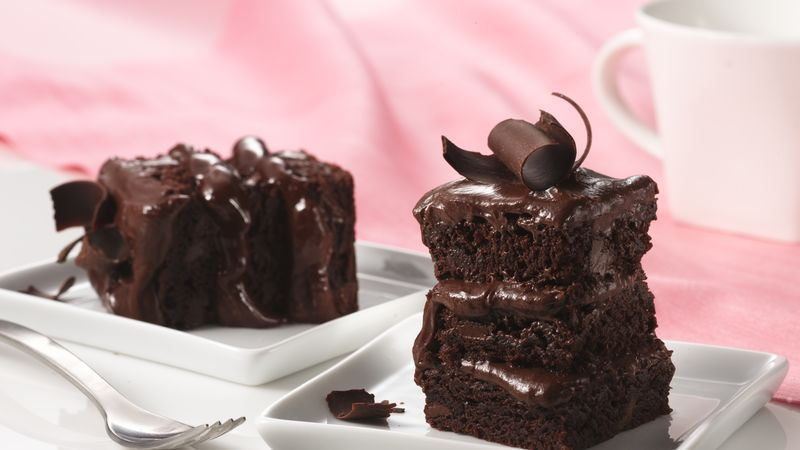

Brownie Torte

Description
This torte is delicious and very rich with a brownie-like texture studded with walnuts.
Triple your chocolate pleasure with three layers of frosted brownies topped with chocolate curls.
Ingredients
- 1 cup miniature semisweet chocolate chips
- 2/3 cup butter, cubed
- 4 large eggs, room temperature
- 1-1/2 cups sugar
- 1-1/2 cups all-purpose flour
- 1 teaspoon baking powder
- 1/2 teaspoon salt
- 1/2 cup coarsely chopped walnuts
Frosting
- 2 cups heavy whipping cream
- 1/4 cup confectioners' sugar
- 1 teaspoon vanlila extract
- 1 cup miniature semisweet chocolate chips
- Additional miniature semisweet chocolate chips, optional
Steps
- Butter and flour a 9 inch round cake pan.
- In a pan over low heat, melt 1/2 cup butter and 1/2 cup light corn syrup.
- Stir in 1 cup chocolate chips until melted.
- Remove from heat and add sugar and eggs, and stir until blended.
- Stir in 1 teaspoon vanilla , flour, and nuts.
- Pour into pan. Bake at 350 degrees F (175 degrees C) for 30 minutes, or until center springs back when touched.
- Cool in pan 10 minutes. Then place on a cooling rack.
- To Make Glaze: Combine chocolate chips, 2 tablespoons butter or margarine and corn syrup in pan.
Stir over low heat till chocolate chips are melted.
Remove from heat. Stir in vanilla.
- Frost tops and sides of torte. Chill until set. Garnish with sliced strawberries.